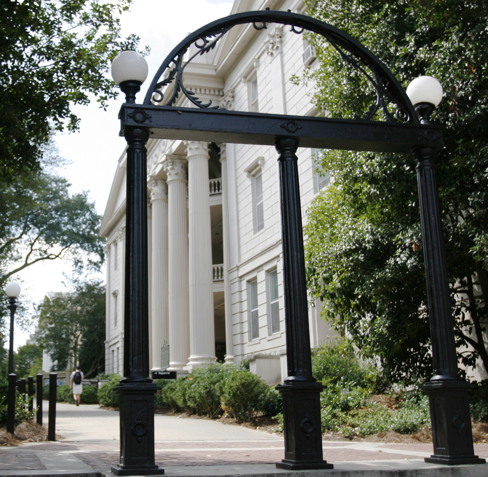

Hello weary internet traveler (and/or CSCI 1100 TA), if you have located this page then it means you are prepared to enter a world of secondary self loathing and nihilism. My name is Zach Mildren, and at the , I am a third year psychology major with no intention of actually doing anything with said degree. I'm enrolled in this course because the nice advisor lady told me it was either this or calculus and you can rest assured that I have some undiscovered form of math dyslexia, so here I am.
(For further information about me, please reference this page that my parents set up for me.)
Ok so this place is actually pretty neat, I (a grown person) have barked, like a dog, at other grown people in the name of this school. While I have been morally broken by the curriculum of this establishment, I'm too invested (emotionally and financially) to leave now. Here are some of the things that make this school so great:
Outlined below are the various directions that I thought I could take my life, with more of my soul being destroyed as the list progresses. I don't know where life will take me when everything is said and done, but I'm sure it will be underwhelming regardless.
| Year | Career Path | Reason for Abandonment |
|---|---|---|
| Freshman | Psychiatrist | I had to take OChem. |
| Sophomore | Marketing | Took an internship and realized I suck at sales. |
| Junior (Current) | Marriage Counselor | TBD |